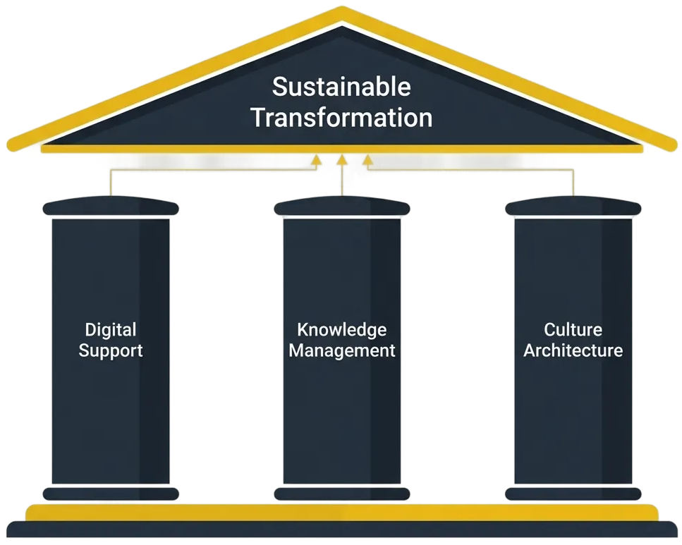

Throughout
this chapter, we have detailed the active management practices required to drive
a transformation: Governance to make decisions, Delivery to execute the work,
and Change Architecture to ensure human adoption. However, for a transformation
to be truly sustainable, these practices must be supported by a foundational
layer of persistent capabilities. These are the Enablers .
Enablers
are the tools, systems, and cultural norms that make the new way of working
possible, efficient, and permanent. Neglecting them is a common mistake; it
creates a transformation that is entirely dependent on the heroic efforts of a
few individuals and is at high risk of reverting to the old ways once the
initial push is over.

Figure 1: The Foundation - Digital Support, Knowledge, and Culture
The Three Core
41: Enablers of Transformation
A
successful transformation relies on three core categories of enablers, which
must be cultivated intentionally.
Digital Support: The Tools for
Complexity
A complex transformation cannot
be run on spreadsheets and slide decks. The sheer volume of interconnected
data requires a suite of integrated digital tools. This is the technical
foundation, which includes platforms for Strategic Portfolio Management (SPM),
process modeling, and collaborative work. The ultimate expression of
Digital Support is theDigitalTwinitselfthe integrated data model that
provides a single source of truth for the entire transformation.
From Capability Building to
Corporate Knowledge Management
This represents a critical shift
in mindset. The traditional approach focuses on "Capability Building
"training individuals and hoping they apply their new skills. This
model carries a significant risk: when trained employees leave, their
knowledge and the organization's investment leave with them.
The new paradigm isCorporate
Knowledge Management. The focus shifts from the individual to the system.
Knowledge is not just acquired by individuals; it is systematically
captured and, most critically,embedded back into the organization's
operating model.
For example, an insight from a
training course is used to update the official procedure for a specific L3
process within the Digital Twin. The next time any employee executes that
process, the improved version is presented to them automatically. The individuals
learning has permanently upgraded the corporate system, making the entire
organization smarter and mitigating the risk of knowledge drain.
Culture as a Talent Magnet and
Risk Reducer
This is another fundamental
shift, moving from reactive "Talent Management" to
proactiveCulture Architecture. The traditional view sees talent as a
resource to be acquiredthrough recruitment, head-hunting, and
referralsoften in a reactive rush to fill gaps.
A more powerful and sustainable
approach is to architect a culture that naturallyattracts and retainstop
talent. The principles of transparency, data-driven accountability, and
clear ownership, which are core to this entire framework, create an
environment where high-performers thrive. This culture becomes a strategic
asset, a talent magnet that reduces employee exits.
Framed this way, culture is a
powerfulrisk management tool. It directly mitigates one of the most common
causes of transformation failure: delivery delays caused by a lack of
skilled teams and the long learning curves that accompany high staff
turnover.
Enablers as a
Critical Risk Management Discipline
Failing
to build these enablers introduces a critical sustainability risk .
WithoutDigital Support, the
transformation will eventually collapse under its own weight and
complexity.
WithoutKnowledge Management, the
organization will suffer from "corporate amnesia."
Without aCulture of Attraction,
the organization will be exposed to constant talent and delivery risk.
Key Takeaways
A transformation's long-term
success depends on the foundationalEnablersthat support it.
The three core enablers
areDigital Support(the tools),Corporate Knowledge Management(embedding
learning into the system), andCulture(as a tool for talent attraction and
risk reduction).
Investing in these enablers is a
criticalrisk managementactivity that ensures the transformation is
sustainable, scalable, and permanent.